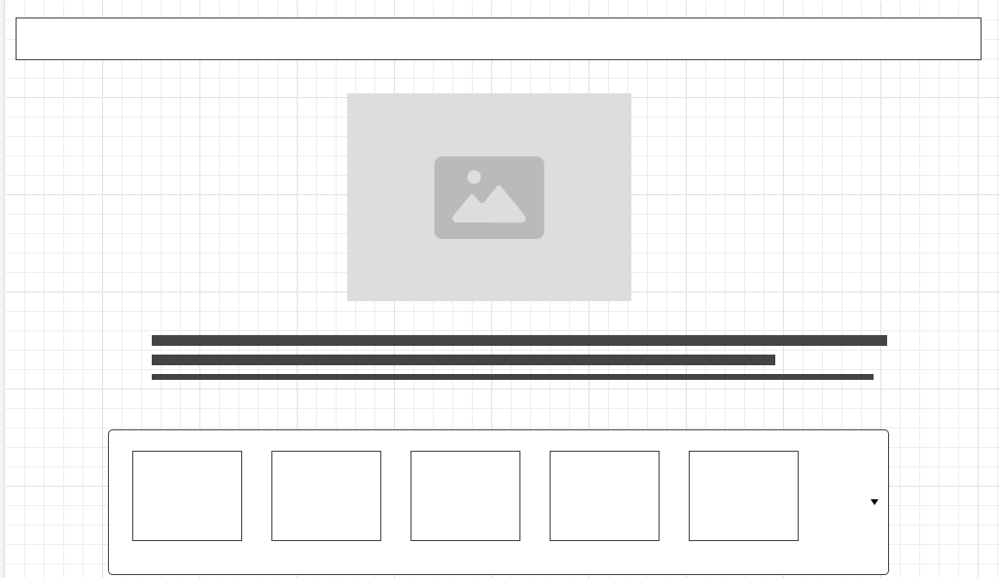

Storyboard
Focus and Design of My Website
The main focus of my website’s layout is to create a clean, intuitive, and user-friendly interface that makes navigation seamless and ensures an enjoyable experience. I’ve implemented a flexible design using CSS Flexbox and Wrap properties to ensure the layout adapts smoothly to different screen sizes, providing an optimal viewing experience across all devices.
Color Scheme and Aesthetics
I’ve chosen a color scheme with various shades of green, symbolizing growth, energy, and innovation—values that reflect the purpose of my portfolio. Green is also strongly associated with technology and development, reinforcing the professional focus of my site. I’ve paired this with white and light backgrounds to create a minimalist, open atmosphere that keeps attention on the content without overwhelming the viewer.
Thematic Balance
My goal with this theme is to strike the perfect balance between professionalism and approachability, offering a modern, engaging, and welcoming experience for anyone who visits.
Page Descriptions
- Main Page: The main page introduces visitors to my portfolio and gives an overview of the content. It includes my profile and links to important sections such as my Professional, Personality, Personal Development, Storyboard, and References pages.
- Professional Page: This page is where I showcase my career aspirations, professional experience, skills, education, and major projects. It serves as a digital résumé for potential employers or collaborators.
- Personality Page: Here, I focus on my personal growth and reflect on the lessons from Twelve Pillars and how they’ve impacted my life. I also highlight the key skills I’ve gained while pursuing my degree in Computer Science.
- Personal Development Page: This page provides deeper insight into who I am beyond just my professional and academic achievements.
Main Page Layout
Consistent Layout

I’ve kept a consistent layout for the Professional, Personality, and Personal Development pages to ensure a cohesive and smooth user experience across these sections.
Future Features
- Newsletter Signup: I want to encourage visitors to sign up for a newsletter to stay updated on my latest projects, blog posts, or insights.
- Search Functionality: I’m considering adding a search bar so users can quickly find specific content, making it easier to navigate my site as it grows.